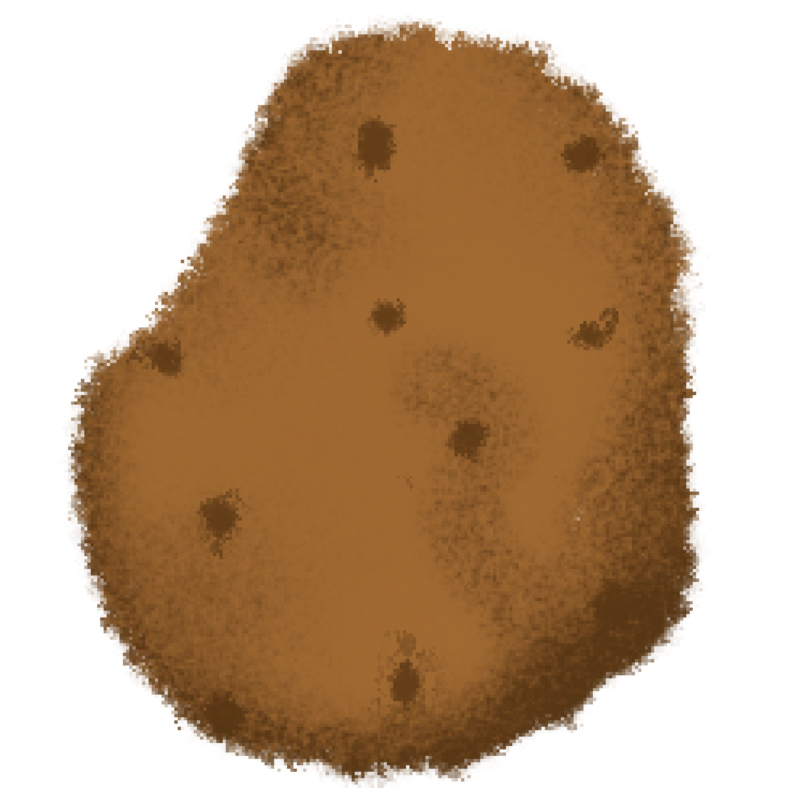
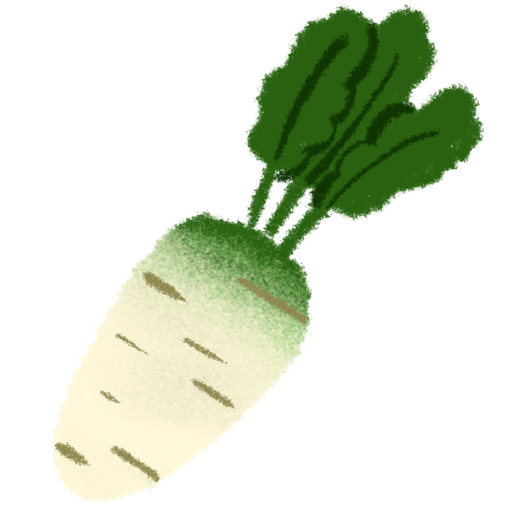
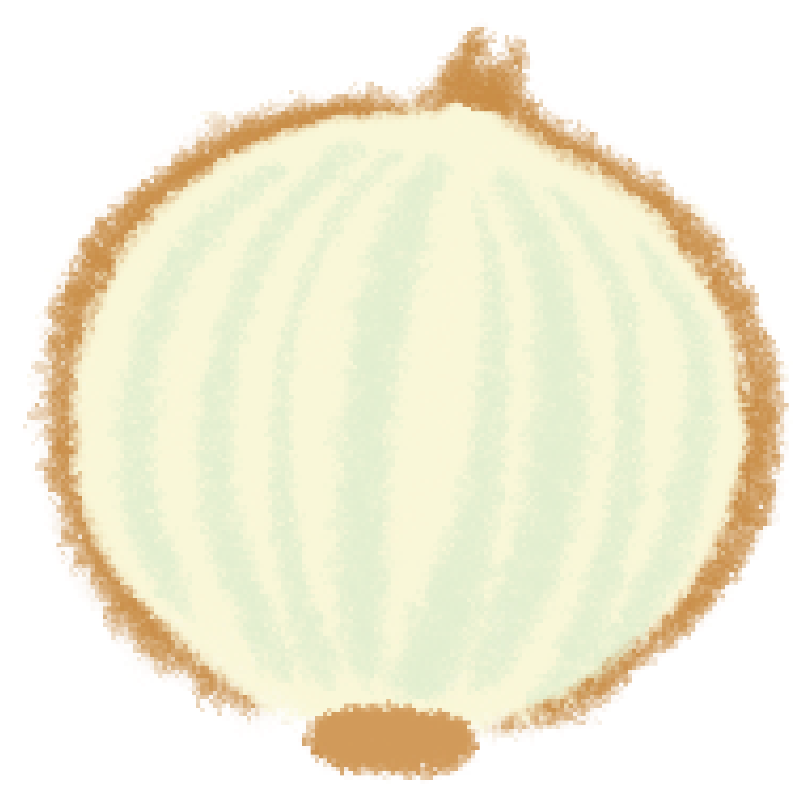

된장찌개

감자 한 개
게 한마리

고추
다시마 3조각
된장
두부
멸치 한 주먹

무우 1/4

양파 반 개

애호박

국간장
1. 여러 채소를 활용하여 육수를 우린다.
육수는 다른 요리에도 자주 활용되기 때문에 한 번 끓일 때 한솥에 끓여 냉장고에 얼려 보관하는 것을 추천한다.
물과 멸치, 다시마, 대파, 양파, 무우를 넣고 뭉근하게 육수를 우린다.
대파는 뿌리까지 함께 넣고 양파는 빨간 껍질을 같이 넣어주면 맛있고 건강한 국물을 즐길 수 있다.
참고로 무우는 겨울 무우가 가장 맛나다.
2. 뚝배기에 된장을 푼다.
정성을 담아 우려낸 육수에 된장 2~3 숫가락을 넣어 끓인다.
이때 애호박, 감자, 양파 등 취향에 맞는 채소를 먹기 좋은 크기로 썰어 함께 넣는다.
요즘에는 파는 된장도 참 맛있다. 집에 된장이 없다면 해찬들 된장을 사길 추천한다. 그 중에서도 가장 맛있다.
3. 해산물을 넣어 한소끔 끓인다.
약간 끓어오르기 시작하면 알새우와 꽃게를 넣어 익을 때까지 더 끓여준다.
해산물이 거의 다 익었을 때 즈음에 국간장을 넣어 간을 맞추고 두부와 파를 넣어 마무리한다.
매콤한 것을 좋아한다면 청양고추를 잘게 썰어 넣어줘도 좋다.
이렇게 완성된 된장은 하루 이틀정도 지나서 먹으면 맛이 아주 진국이다.
꽃게의 진한 맛과 된장의 깊은 맛이 어루러진 환상의 맛.